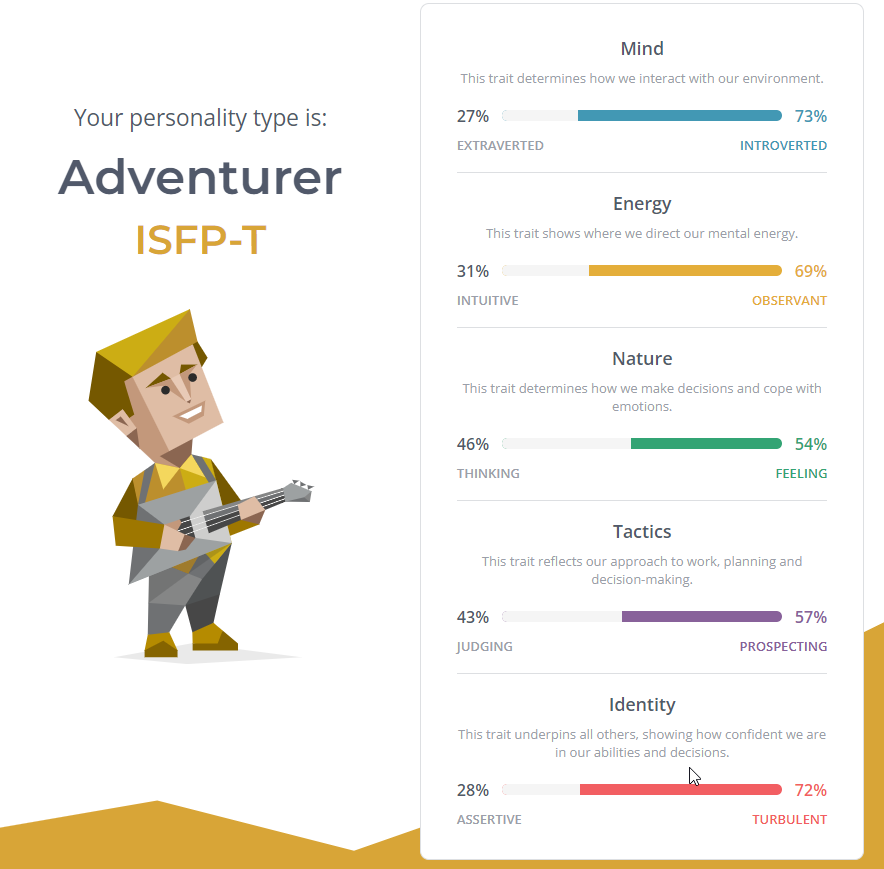
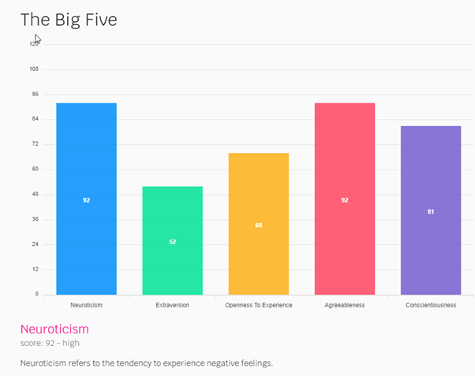
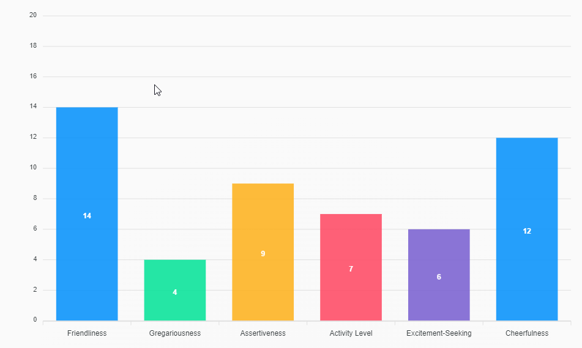
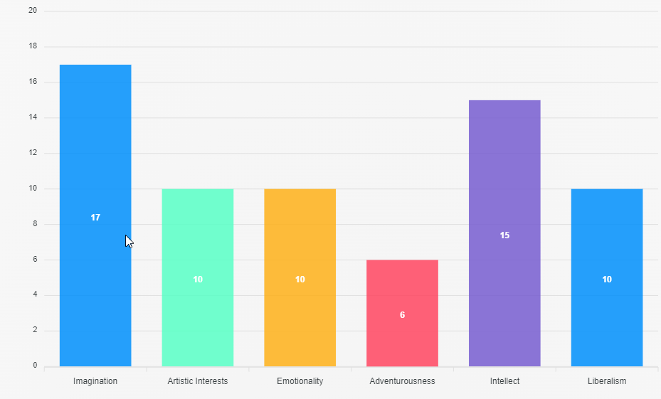
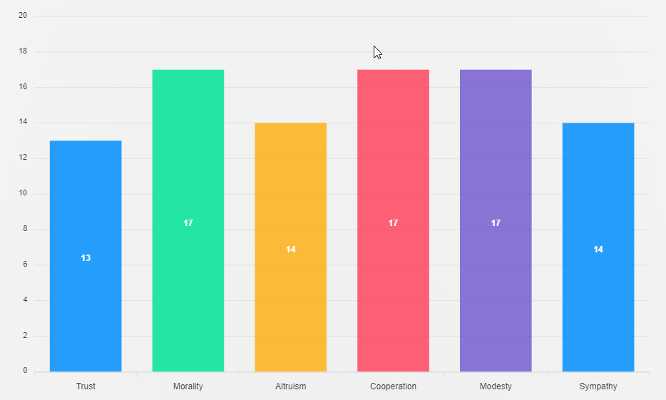

Personality Profile
Myers Briggs
My Personality Type is an Adventurer ISFP-T.
Strengths
The strength of the Adventurer is charming, sensitive to others, imaginative, passionate, curious and artistic. They are relaxed and warm with a “live and let live” attitude that naturally makes them likeable and popular. The Adventurer can easily relate to others' emotions which helps them establish harmony and good will and minimizes conflict.
Weaknesses
The Adventurer's weaknesses are that they are fiercely independent, unpredictable, easily stressed, overly competitive, and fluctuating self-esteem. Anything that interferes with their freedom of expression creates a sense of oppression, that makes work a challenge.
Team Composition
The team composition for the Adventurer is where they have as much wiggle room as possible to do things the way that they like; and be spontaneous, charming, and genuinely fun people to be around. They just want the chance to express those natural qualities and to know that their efforts are appreciated.
Learning Style Test
This Learning Style Test was provided by the Online Student Support on the RMIT Infrastructure Website.
Academic Drive
I am driven by academic success and likely to excel due to my commitment, effort and determination.
Personal Value
I enjoy studying and see value in what I am studying. I am motivated to complete my studies and enjoy activities that are new and challenging.
Goal Alignment
The online degree is directly connected to my career and life goals, and I am confident that this course will get me to where I want to go.
Time Management
Time management is one of my strengths and am more likely to achieve success in my studies. The test highlighted that I am a superstar in time management, and well versed in prioritising.
Accessing Support
Students who make use of the relevant study resources and support systems are more likely to persist with their studies and achieve success. According to the test, I am well versed in independent learning.
Using Technology
Students who are comfortable in using digital platforms can quickly adapt to online studies. In my current work and personal life, I am considered a professional in using digital platforms, and strongly believe that online learning tools are significant in developing effective, self-directed learning skills.
Persistence
Students who can remain focused and motivated throughout their studies are more likely to meet their long-term goals. I have a strong aptitude for staying focused and determined to work towards my goals and is invaluable while studying and managing competing priorities.
Big 5 Personality Test
The Big 5 Personality Test that I undertook is located at bigfive-test.com.
Neuroticism
Score - 92 (High)
Neuroticism refers to the tendency to experience negative feelings.

Anxiety
Score - 14 - high
The “fight-or-flight” system of the brain of anxious individuals is too easily and too often engaged. Therefore, people who are high in anxiety often feel like something dangerous is about to happen. They may be afraid of specific situations or be just generally fearful. They feel tense, jittery, and nervous. Persons low in Anxiety are generally calm and fearless.
Anger
Score - 15 - high
Persons who score high in Anger feel enraged when things do not go their way. They are sensitive about being treated fairly and feel resentful and bitter when they feel they are being cheated. This scale measures the tendency to feel angry; whether or not the person expresses annoyance and hostility depends on the individual's level on Agreeableness. Low scorers do not get angry often or easily.
Depression
Score - 10 - low
This scale measures the tendency to feel sad, dejected, and discouraged. High scorers lack energy and have difficulty initiating activities. Low scorers tend to be free from these depressive feelings.
Self-Conscious
Score - 18 - high
Self-conscious individuals are sensitive about what others think of them. Their concern about rejection and ridicule causes them to feel shy and uncomfortable around others. They are easily embarrassed and often feel ashamed. Their fears that others will criticize or make fun of them are exaggerated and unrealistic, but their awkwardness and discomfort may make these fears a self-fulfilling prophecy. Low scorers, in contrast, do not suffer from the mistaken impression that everyone is watching and judging them. They do not feel nervous in social situations.
Immoderation
Score - 20 - high
Immoderate individuals feel strong cravings and urges that they have difficulty resisting. They tend to be oriented toward short-term pleasures and rewards rather than long- term consequences. Low scorers do not experience strong, irresistible cravings and consequently do not find themselves tempted to overindulge.
Vulnerability
Score - 15 - high
High scorers on Vulnerability experience panic, confusion, and helplessness when under pressure or stress. Low scorers feel more poised, confident, and clear-thinking when stressed./p>
Extraversion
Score - 52 - low
Extraversion is marked by pronounced engagement with the external world.
Friendliness
Score - 14 - high
Friendly people genuinely like other people and openly demonstrate positive feelings toward others. They make friends quickly and it is easy for them to form close, intimate relationships. Low scorers on Friendliness are not necessarily cold and hostile, but they do not reach out to others and are perceived as distant and reserved.
Gregariousness
Score - 4 - low
Gregarious people find the company of others pleasantly stimulating and rewarding. They enjoy the excitement of crowds. Low scorers tend to feel overwhelmed by, and therefore actively avoid, large crowds. They do not necessarily dislike being with people sometimes, but their need for privacy and time to themselves is much greater than for individuals who score high on this scale.
Assertiveness
Score - 9 - low
High scorers Assertiveness like to speak out, take charge, and direct the activities of others. They tend to be leaders in groups. Low scorers tend not to talk much and let others control the activities of groups.
Activity Level
Score - 7 - low
Active individuals lead fast-paced, busy lives. They move about quickly, energetically, and vigorously, and they are involved in many activities. People who score low on this scale follow a slower and more leisurely, relaxed pace.
4.3.13 Excitement-Seeking
Score - 6 - low
High scorers on this scale are easily bored without high levels of stimulation. They love bright lights and hustle and bustle. They are likely to take risks and seek thrills. Low scorers are overwhelmed by noise and commotion and are averse to thrill-seeking.
Cheerfulness
Score - 12 - neutral
This scale measures positive mood and feelings, not negative emotions (which are a part of the Neuroticism domain). Persons who score high on this scale typically experience a range of positive feelings, including happiness, enthusiasm, optimism, and joy. Low scorers are not as prone to such energetic, high spirits.
Openness To Experience
Score - 68 - low
Openness to Experience describes a dimension of cognitive style that distinguishes imaginative, creative people from down-to-earth, conventional people.
Imagination
Score - 17 - high
To imaginative individuals, the real world is often too plain and ordinary. High scorers on this scale use fantasy as a way of creating a richer, more interesting world. Low scorers are on this scale are more oriented to facts than fantasy.
Artistic Interests
Score - 10 - low
High scorers on this scale love beauty, both in art and in nature. They become easily involved and absorbed in artistic and natural events. They are not necessarily artistically trained nor talented, although many will be. The defining features of this scale are interest in, and appreciation of natural and artificial beauty. Low scorers lack aesthetic sensitivity and interest in the arts.
Emotionality
Score - 10 - low
Persons high on Emotionality have good access to and awareness of their own feelings. Low scorers are less aware of their feelings and tend not to express their emotions openly
Adventurousness
Score - 6 - low
High scorers on adventurousness are eager to try new activities, travel to foreign lands, and experience different things. They find familiarity and routine boring and will take a new route home just because it is different. Low scorers tend to feel uncomfortable with change and prefer familiar routines.
Intellect
Score - 15 - high
Intellect and artistic interests are the two most important, central aspects of openness to experience. High scorers on Intellect love to play with ideas. They are open-minded to new and unusual ideas, and like to debate intellectual issues. They enjoy riddles, puzzles, and brain teasers. Low scorers on Intellect prefer dealing with either people or things rather than ideas. They regard intellectual exercises as a waste of time. Intellect should not be equated with intelligence. Intellect is an intellectual style, not an intellectual ability, although high scorers on Intellect score slightly higher than low-Intellect individuals on standardized intelligence tests.
Liberalism
Score - 10 - low
Psychological liberalism refers to a readiness to challenge authority, convention, and traditional values. In its most extreme form, psychological liberalism can even represent outright hostility toward rules, sympathy for lawbreakers, and love of ambiguity, chaos, and disorder. Psychological conservatives prefer the security and stability brought by conformity to tradition. Psychological liberalism and conservatism are not identical to political affiliation, but certainly incline individuals toward certain political parties.
Agreeableness
Score - 92 - high
Agreeableness reflects individual differences in concern with cooperation and social harmony. Agreeable individuals value getting along with others.
Trust
Score - 13 - high
A person with high trust assumes that most people are fair, honest, and have good intentions. Persons low in trust see others as selfish, devious, and potentially dangerous.
Morality
Score - 17 - high
High scorers on this scale see no need for pretence or manipulation when dealing with others and are therefore candid, frank, and sincere. Low scorers believe that a certain amount of deception in social relationships is necessary. People find it relatively easy to relate to the straightforward high scorers on this scale. They generally find it more difficult to relate to the unstraightforward low scorers on this scale. It should be made clear that low scorers are not unprincipled or immoral; they are simply more guarded and less willing to openly reveal the whole truth.
Altruism
Score - 14 - high
Altruistic people find helping other people genuinely rewarding. Consequently, they are generally willing to assist those who are in need. Altruistic people find that doing things for others is a form of self-fulfilment rather than self-sacrifice. Low scorers on this scale do not particularly like helping those in need. Requests for help feel like an imposition rather than an opportunity for self-fulfilment.
Cooperation
Score - 17 - high
Individuals who score high on this scale dislike confrontations. They are perfectly willing to compromise or to deny their own needs in order to get along with others. Those who score low on this scale are more likely to intimidate others to get their way.
Modesty
Score - 17 - high
High scorers on this scale do not like to claim that they are better than other people. In some cases this attitude may derive from low self-confidence or self-esteem. Nonetheless, some people with high self-esteem find immodesty unseemly. Those who are willing to describe themselves as superior tend to be seen as disagreeably arrogant by other people.
Sympathy
Score - 14 - high
People who score high on this scale are tender-hearted and compassionate. They feel the pain of others vicariously and are easily moved to pity. Low scorers are not affected strongly by human suffering. They pride themselves on making objective judgments based on reason. They are more concerned with truth and impartial justice than with mercy.
Conscientiousness
Score - 81 - high
Conscientiousness concerns the way in which we control, regulate, and direct our impulses.

Self-Efficacy
Score - 15 - high
Self-Efficacy describes confidence in one's ability to accomplish things. High scorers believe they have the intelligence (common sense), drive, and self-control necessary for achieving success. Low scorers do not feel effective and may have a sense that they are not in control of their lives.
Orderliness
Score - 9 - low
Persons with high scores on orderliness are well-organized. They like to live according to routines and schedules. They keep lists and make plans. Low scorers tend to be disorganized and scattered.
Dutifulness
Score - 15 - high
This scale reflects the strength of a person's sense of duty and obligation. Those who score high on this scale have a strong sense of moral obligation. Low scorers find contracts, rules, and regulations overly confining. They are likely to be seen as unreliable or even irresponsible.
Achievement-Striving
Score - 17 - high
Individuals who score high on this scale strive hard to achieve excellence. Their drive to be recognized as successful keeps them on track toward their lofty goals. They often have a strong sense of direction in life, but extremely high scores may be too single-minded and obsessed with their work. Low scorers are content to get by with a minimal amount of work and might be seen by others as lazy.
Self-Discipline
Score - 13 - high
Self-discipline-what many people call will-power-refers to the ability to persist at difficult or unpleasant tasks until they are completed. People who possess high self-discipline are able to overcome reluctance to begin tasks and stay on track despite distractions. Those with low self-discipline procrastinate and show poor follow-through, often failing to complete tasks-even tasks they want very much to complete.
Cautiousness
Score - 12 - neutral
Cautiousness describes the disposition to think through possibilities before acting. High scorers on the Cautiousness scale take their time when making decisions. Low scorers often say or do first thing that comes to mind without deliberating alternatives and the probable consequences of those alternatives.
Review of the 3 Tests
What do the results of these tests mean for you?
The results of the tests give me an insight into my personality and how this impacts the I work. I have done tests like this before, and the results between have changed somewhat. This I believe is due to the fact, that as people, we change and grow over time. Life experiences can also affect how we feel and answer questions, and the time of day may also impact our answers.
How do you think these results may influence your behaviour in a team?
I will need to keep in mind that I am part of a group and need to be able to contribute to the group rather than go on tangents doing my own thing. I will also need to ensure that I speak up with ideas and ensure that I do not take comments as criticisms.
How should you take this into account when forming a team?
When forming a team; I need to consider how I interact with people, and how they interact with others. We should have compatible personalities so that we can work effectively together, and ensure that we have someone that is able to Project Manage the team, without actually riding roughshod over the team.